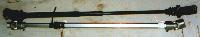
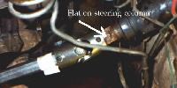

Steering shaft replacement is a common need for CJ owners since all CJs are at least 13 years old by now. Factory replacements parts are still available, but they tend to wear out quickly when used with large tires in off-road conditions. The boot on the factory bell coupler at the lower end of the factory shaft tends to wear out and allow grit into the bell coupler assembly, causing wear to accelerate. The factory upper U-joint is not sealed and does not incorporate any type of bearing.
There is a better answer than replacing your worn steering shaft with OEM replacement parts. Borgeson makes replacement steering shafts for CJs and many other types of vehicles that incorporate much stronger sealed needle bearing type U-joints. Because the U-joints are of the needle bearing design and are are sealed, they will last much longer under hard conditions. Another positive aspect of the needle bearing type U-joints is that they are able to withstand higher torque loads than the factory parts.
Installation of the Borgeson steering shaft was quick and painless. Including the time to remove the fender for pictures, and working with only hand tools, I was able to install the steering shaft in under 1/2 hour. There is normally no need to remove the fender, I only removed mine to get clearer pictures.
The procedure is very straight forward:
Remove the existing steering shaft: There is a bolt at each end of the shaft that must be completely removed because they ride in a groove on the steering column and steering box. Once the bolts are out, tapping lightly with a hammer will dislodge the old steering shaft. No further disassembly is required.
|  |
| The stock shaft is shown on top and the Borgeson shaft is on the bottom. The Borgeson shaft is shown with the slip joint collapsed in this picture. The Borgeson shaft can easily expand enough to fit a 3" body lift. |
Install the new steering shaft: Align the set screws with the flats on the steering column and the steering box. Extend the shaft to the proper length and tighten down the set screws and jam nuts.
|  |
| The set screw on the Borgeson shaft must align with the flat on the steering column. There is a similar flat on the seering box for the other set screw. The shaft was expanded further after the photo to place the set screw in the center of the flat area. |
An immediate improvement in steering precision was noted because the play from the worn joints on the old shaft was gone. On the road wandering was reduced, and off-road the unit worked perfectly. Steering feel was enhanced by removing the play from the steering shaft.
I tested the steering shaft off-road at the Moab Easter Jeep Safari, and I have put on hundreds of street miles. I could find no flaw with the Borgeson steering shaft.
|
Borgeson Universal Company, Inc Dept. ORC 187 Commercial Blvd Torrington Ct 06790-3098 860-482-8283 FAX 860-496-9320
|
{kind=link}
{kind=link}